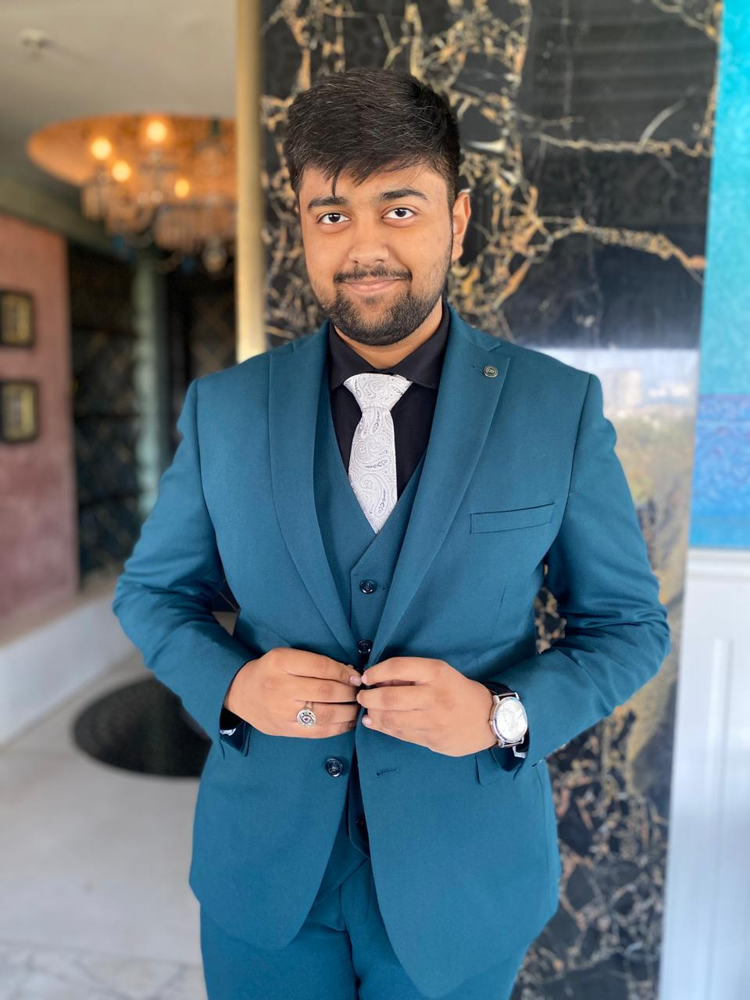
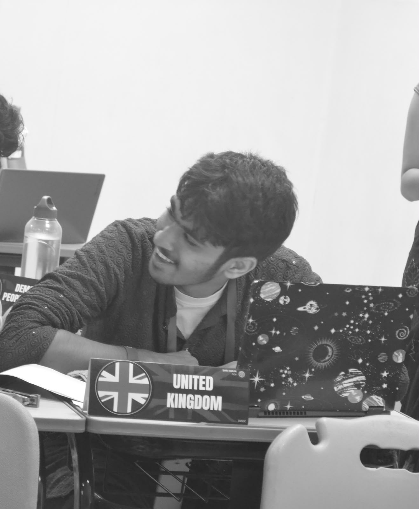

About the Committee
The WHO is the United Nations' dedicated agency for global public health. Established in 1948, it focuses on improving worldwide wellness, expanding access to basic healthcare infrastructure, and coordinating international containment and relief efforts during health emergencies.
Agenda
Outbreak of deadly viruses like COVID-19, EBOLA, and HANTAVIRUS, from 2020 to present date, and the failure of each country’s healthcare systems to contain and control it, with special emphasis on: Betterment of healthcare services and involvement of the UN in all major Healthcare decisions worldwide.
Background Guide
Executive Board

Chairperson: Jibraan Arora
Jibraan Randeep Arora, currently a Law Student, pursuing his B.A LLB, brings a multifaceted background in current affairs, politics, and business. He demonstrated early leadership as Vice Head Boy at Delhi Public School and became the youngest DJ in Telangana, performing at numerous events since the age of 11.Jibraan's extensive MUN experience spans over many conferences, where he has served as a debater, founder, secretary-general, and advisor. His dedication to a fair legal system and deep understanding of diplomacy and debate underscore his commitment to justice.Jibraan aims to foster collaboration, critical thinking, and constructive debate, working towards innovative solutions to global challenges while upholding the principles of diplomacy and mutual respect.

Rappoteur: Shreyan Jain
Shreyan Jain is a Grade 12 Science student at DPS Hyderabad and an enthusiastic MUNer with experience across 10+ conferences. He has a particular fondness for military, human rights, and Lok Sabha committees, where strategy, diplomacy, and the occasional parliamentary chaos keep him thoroughly entertained. He believes MUNs are one of the best platforms for transforming curious students into confident leaders and responsible global citizens. Outside the committee room, you’ll probably find him on a pickleball court, arguing that pickleball isn’t just a social media sport and deserves just as much respect as any other. He is completely immersed in research for his financial paper and will most probably publish it at the end of the year. Regardless of whether he’s debating geopolitical issues or attempting to solve physics derivations, Shreyan loves a good challenge and an interesting discussion. One of his life-long aspirations is to work at Jane Street, combining his passion for Finance and Computer Science.